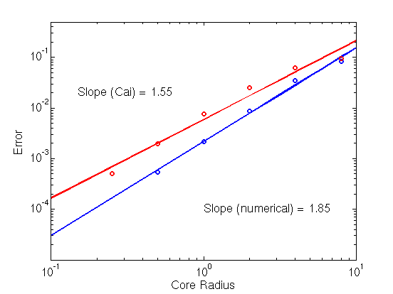
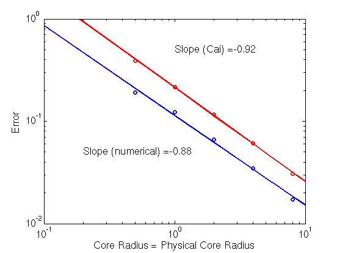
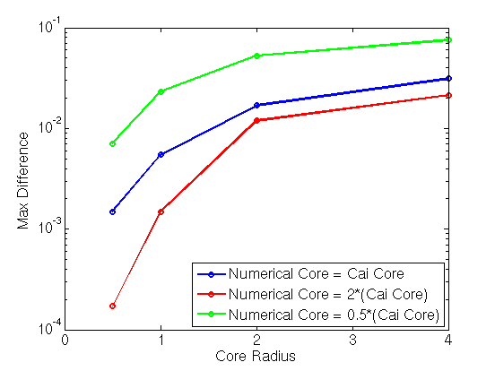

Comparison of Nonsingular Dislocation Theory with Results of Numerically Smeared Cores
Abstract
Analytically smearing of the dislocation core to remove the singularity
inherent in theory of infinitely thin dislocations results in the errors
of the same order of magnitude in those that arise when the dislocation
core is smeared numerically.
Methodology
- For all of the results, the dislocation configuration is taken to be
an array of edge dislocations with Burgers vector in the (1,0,0)
direction and line direction in the (0,0,1) direction. The array
ordered such that the normal to the plane of the dislocation array is
in the (1,0,0) direction. The dislocation array is periodically
repeated in the x-direction. The simulation cells is [-50,50]x[-40,40],
which implies that the inter-dislocation spacing is 80 and the
distance between periodic images of the dislocation array is 100.
- The stress fields for the nonsingular theory of dislocations account
for the fact that there are an infinite number of periodic image
dislocations in the y-direction. The formulae for infinite, periodic
dislocation arrays were derived by using the formulas in section 19-5
of Hirth/Lothe with expressions for the stress fields from Cai 2006.
(dislocation_arrays_nonsingular.pdf)
- The analytical stress fields include one periodic image of the
dislocation array in the x-direction.
- All calculations are on a uniform grid with dx = dy using the
Fourier transform formulation in Xiang et. al.
- The errors for the stress fields are only computed OUTSIDE of the
specified physical core.
- Larger versions of all figures on this page are available
by clicking on them.
- Code used to obtain these results are:
compute_stress_fields_sharp.m,
compute_stress_fields_cai.m,
compute_stress_fields_numerical.m,
dislocation_array_stress_field_cai.m,
dislocation_array_stress_field_sharp.m,
distributed_core_effects.m,
numerical_vs_analytical_smearing.m,
sharp_vs_cai.m,
results.m.
Dependence of Error on Core Size Parameter
Both analytical and numerical smearing of the core yield an error in the
stress field outside of the physical core region. These errors have the
same order of magnitude. However, the error in the nonsingular theory is
systematically larger than the error in the numerical solution.
|
The analytical and numerical stress fields have comparable errors.
Here the physical core radius is fixed at 4 and the grid resolution is
fixed at 0.25.
|

|
Increasing Error when Physical Core and Core Size Paramter are Equal
The choice of taking the physical core size to be the same as the
core size parameter leads to an error in the stress fields around the
dislocation core that increases with decreasing core size. This effect
is present in both the analytical and numerical solutions.
|
Error shows a roughly inverse dependence on the numerical
core radius. Here the grid resolution is fixed at 0.25.
|

|
Comparison of Difference Between Nonsingular Theory and Numerical
Solution
The difference between the nonsingular theory is nontrivial but decreases
as we shrink both the numerical core radius and the core radius parameter
in the nonsingular theory. It appears that using a smaller core radius
parameter in the nonsingular theory decreases the difference between the
nonsingular theory and the numerical solutions.
|
Comparison of the difference between the stress fields in the nonsingular
theory and the numerically computed stress fields.
Here the physical core radius is fixed at 4.
|

|
Summary/Conclusions
At distances near the physical core size, any theory of dislocations that
distributes the core over a finite region that is on the order of the
physical core size leads to significant deviations from the stress fields
for infinitely thin dislocation lines. For the nonsingular theory
developed by Cai et. al., the deviations have roughly the same scaling
and same order of magnitude as the errors in the numerical solution.
Any dislocation dynamics simulations that removes the singularity by
smearing the dislocation core to a width on the order of the "physical
core size" will show the same problems as our level set based simulation.
References
- W. Cai, A. Arsenlis, C.R. Weinberger, and V.V. Bulatov.
A non-singular continuum theory of dislocations.
J. Mech. Phys. Solids, 54: 561-587, 2006.
{kind=link}
{kind=link}
{kind=link}